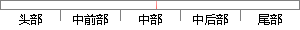

IV值是对与每一个变量的分箱WOE值分配一个权重后的累加和。
片段位置图

相似结果|
1
原句片段：IV值是对与每一个变量的分箱WOE值分配一个权重后的累加和。
相似片段 1：WOE(weight of Evidence)字面意思证据权重,对分箱后...IV可用来表示一个变量的预测能力。 IV预测能力 <0...根据IV值来调整分箱结构并重新计算WOE和IV,直到IV达到...
|
※ 片段修改建议 ※
近似词参考：- 每一个：每个
- 分配：分派
系统自动生成语句：IV值是对与每个变量的分箱WOE值分派一个权重后的累加和。
注：本片段修改建议为系统自动生成，仅供参考。